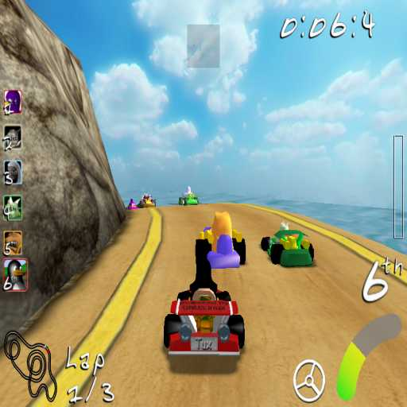

Player's
Manual


Introduction
SuperTuxKart
(abbreviated STK) is a fun kart racing game, focusing on
fun and
not on realistic physics. You can find more details
on
http://supertuxkart.sf.net
It
was originally based on Steve Baker's TuxKart
(http://tuxkart.sourceforge.net),
but
by now has developed a life on its own. It was
picked up by the
Linux Game Tome (http://www.happypenguin.org)
Game
of the Month project and got a big overhaul during this time,
but
was left in an unfinished state.
A new set of maintainers,
namely hiker & coz, took over in 2006,
and since then four
official versions (0.2, 0.3, 0.4, & 0.5) have been
released.


Requirements
Hardware
*
You need a 3D graphics card that can support OpenGL or Mesa.
* You
should have a CPU that's running at 450MHz or better.
* You'll
need at least 32Mb RAM.
* A sound card would be nice - but it's
not essential.
* Ideally, you want a joystick - preferably one
with at least 6
buttons - you can also drive from the
keyboard or the mouse,
thought currently it is hard to
drive with the mouse.
Software
Right now,
SuperTuxKart runs under Linux, Windows, and MacOSX.
While we are
not aware of any ports to BSD, BeOS, etc., we try to keep the
source portable, so you should be able to compile for these platforms
without a problem.
You need the following programs
installed:
OpenGL (or Mesa 3.0 or later)
http://www.opengl.org,
http://www.mesa3d.org
PLIB
1.8.4
http://plib.sourceforge.net
SDL
1.2
http://www.libsdl.org
OpenAL
http://www.openal.org
ALUT
http://www.openal.org
You should also be able to get pre-built binaries for various systems, including MacOS X and Windows. Many Linux distributions will have STK in their repositories, or .debs/.rpms will be available.


Controlling
your kart
To win races you will need to master
your controls. Here are the
predefined controls:
|
Function |
Player 1 |
Player 2 |
Player 3 |
Player 4 |
|
Steer |
Left / Right arrow |
A / D key |
F / H key |
J / L key |
|
Accelerate |
Up arrow |
W key |
T key |
I key |
|
Brake |
Down arrow |
S key |
G key |
K key |
|
Use item |
Right control |
Left Control |
N key |
. key |
|
Wheelie |
Right shift |
Left shift |
C key |
M key |
|
Rescue |
Backspace |
Q key |
R key |
U key |
|
Jump |
- key |
Caps lock |
V key |
, key |
|
Look back |
Right alt |
Left alt |
N key |
/ key |
The rescue button is meant to be used if your kart is stuck;
it
will send you to the track with your approximate progress,
but
it will take a few seconds.
The Escape key pauses the
game and shows the race menu. Also,
pressing Escape in a menu will
exit from it, and in the main
menu it closes the game.
There
are also some special functions:
F10 key - Save the
last 1000 frames into a file ./history.dat
This can be used to reproduce problems occurring
during a race. This is mainly useful for developers.
F11 key - Toggle wire-frame view.
F12 key - Toggle
frame-per-second display.


Starting for the first time
When you start the game for the first time, some features may bee locked. To unlock these features, you must complete certain challenges- the are accessed by selecting “challenges from the main menu.


Game modes
Three
different game modes are available:
1) Grand Prix
A set of several races, each with several laps.
2) Quick Race
A single race with between 1 and 5 laps (alone or against opponents).
3) Time Trial
A single race focused on racing, with no collectibles (alone or against opponents).
4) Follow the Leader
A single race where your goal is to be the closest to
the leader kart and never be the last one.
The last kart is eliminated at the end of each round.


The
race screen

This screen has several components:
Position
display (left) : here you will see the places of
everyone
participating in the race; after the leader goes
though the
goal, a counter will appear next to their images
showing
how much time behind they are. The places are
initially
colored in white, which will become a bit more red
with
every lap finished; after the race is finished the
place
appear in green.
Track map (bottom left corner) : this
will show the position
of everyone, in relation to the
track; humans are drawn with
bigger dots.
Lap
(right of the track map) : the left number shows how many
laps you have completed, the right number shows how many laps
you have to complete to finish the race.
Item (top) :
the number of items and what is that you are
holding is
displayed here.
Power bar (right) : it displays how
much power you have by
grabbing energizers (coins).
Speed bar (bottom right) : shows how fast you are moving.
Steering wheel: when you steer, the front wheels do not rotate
to their limit instantly; instead, they take less than a
second to achieve full rotation. The current rotation is
displayed here.
Current place: here it is shown
how much you have advanced in
comparation with your
competitors.
Time: how much time it takes for you to
reach the goal.


Multiplayer
Split
screen multi-player is supported, though you need a
somewhat
powerful computer and graphics card to get a high frame
rate in
this case. Network multi-player is not yet supported.
When
playing with your friends, the screen will be divided in
cuadrants.
Even thought there are default controls for all
players, you
should change them if you feel uncomfortable, or
if you have a
joystick.
Also, after you finish the race, you might want to
go back to
give your friends some
trouble!


Collectables
There
are currently many 'good things' you can get (triggered by
touching
an item box) and a few 'bad things'.
When you pick up one of
the good things, you will see it on your
item box, and activate it
by using an item (see above for
default key bindings).
Bad
things happen immediately - and last for a few seconds
before
'going away' by themselves.
Notice that (unlike some kart
games), the computer controlled
players also collect and use
power-ups in the same way you do.
Energizers gradually fill up
the energy level - as you collect
more, you'll find that an item
cube will subsequently give you
two, three, four or five power-ups
at one time!
Good Things
|
|
Missiles: unguided but fast. If they hit anything (including the track), they explode impressively. The effect on a Kart is to stop it dead - so you have to accelerate again from zero. |
|
|
Homing missiles: slower than the regular kind - but they track the nearest kart and are quite hard to shake off. |
|
|
Fuzzy blob / Spark: even slower still, a kart can outrun them quite easily. They ricochet off the sides of the track and only explode when they hit a Kart. Since they are not moving fast, they'll tend to stay close to where you dropped them, thoughtyou won't know exactly where. |
|
|
Portable Zippers: these are just like the zippers on the track itself - they give you a sudden acceleration and temporarily increase the top speed of your kart. |
|
|
Portable parachutes: this pops out the back of all the karts in a better position than you and slows them down a for some seconds. The worse your position is, the higher the probabilities of getting this you have (but they are stillsmall). You can only have one at a time. |
|
|
Portable anvil: the driver in the first position gets dragged by a heavy anvil, allowing other drivers to catch up with him... like the portable parachutes, the worse your position is, the higher probabilities of getting this you have. However, you can't get this if the driver in the first position alreadyfinished the race, and you can't have more than one at a time. |
Bad Things
Parachute: this pops out the
back of your kart and slows you down
a little for a few
seconds only. Enough to drop you back one place
if it's a
close race though.
Anvil: gets dragged behind your
kart on a rope for an even shorter
amount of time than the
parachute... but the drag effect is much
stronger; your kart
hardly moves at all.
Bomb: after 30 seconds the
bomb will explode, but if another kart
touches you, the bomb
will be transfered to it and the remaining
time will be
reduced by 5 seconds. If you hit a banana while
having a
bomb attach, it will explode immediately! Also, the bomb
can't
be transfered to the inmediate previous bomb
holder.


Game
mechanics and tips
As a racer in SuperTuxKart, your
goal is to reach the
finish line before your opponents, but as a
bonus you might want
to show your awesome driving skills.
The
item cubes contain helpful objects; which item you get is
matter
of luck. If you have an item already, you will get another
item of
the same type if by luck the random selection chooses
the same
item type as the one you already have.
The energizers will
increase the number of items you grab from a
single item cube. You
may only have up to 5 items, except the
anvil and the parachute,
since anvils are so heavy and you have
so many parachutes, there
is not much room and you can only
carry one!
On the track
there could be zippers, which will give you a boost
when you go
over them. Avoid water and lava, since you can't
drive on them and
you will have to be rescued just before
you touch them!
There
are also nasty things left on the track which will put an
anvil or
a parachute on your kart.
If you don't have items that you
wish to use, try not to be in
a collision course towards other
karts, since they might have
items of their own to throw at you!
also, if they crash you
could go down with them.
If you are
running rather fast, you can pop a wheelie, which gives
you an
additional speed boost, but you can't steer your kart
while doing
a wheelie (since your front wheels are not touching
the track), so
be careful.
When all human controlled karts finish the race,
the game will wait
some seconds for the AI to finish the race. If
the AI doesn't, it
will estimate the arrival time based on the
kart's average speed.
If you are tired of playing the same
way, complete some challenges
and you will unlock new features!


Comand
line options
Useful command line options:
-N,
--no-start-screen Quick start without any menus
-l,
--list-tracks List all tracks
-k,
--numkarts NUM Number of karts to
race
--kart NAME
Use kart NAME
--list-karts
Lists all available karts
--laps NUM
Number of laps to play
--herring STYLE
Use STYLE as your herring style
-f, --fullscreen
Fullscreen display
-w, --windowed
Windowed display
-s, --screensize WxH Set
screensize, e.g. -s 800x600
-v, --version
Show version
-h, --help
Show command-line options


Support
If
you have any problems, please send an e-mail to the
Super Tux Kart
mailing list at supertuxkart-devel@lists.sourceforge.net .
The
archives of this mailing list can be found at
http://sourceforge.net/mailarchive/forum.php?forum_name=supertuxkart-devel/ .
There
is also a wiki on the homepage
at http://supertuxkart.sourceforge.net .


License
SuperTuxKart
is released under the provisions of
the GNU General Public License
(GPL).